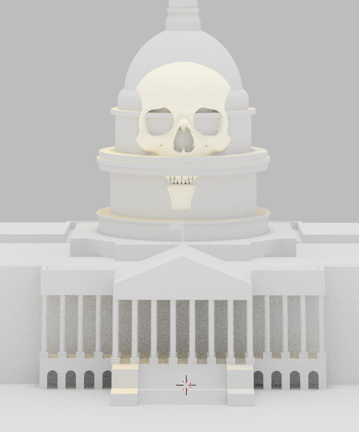
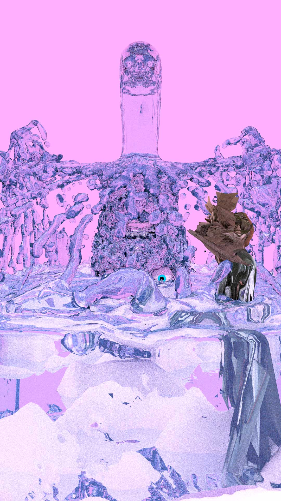

052216
Sunday
11:02AM CST
Whoa, long time, no write. This last semester sucked it out of me. Big time. I'm in the middle of teaching the first summer session, too, with similar feels.
The upside is that I can start talking about a couple of projects I've been working on during the last year.
Water has been bubbling in the back of my mind for a while now. As always, I just need the time to be able to explore one, single, idea/theme.
Some of the content is pretty opaque. Others aren't exactly subtle. I try to avoid being to didactic with my work. Low hanging fruit and all that.

